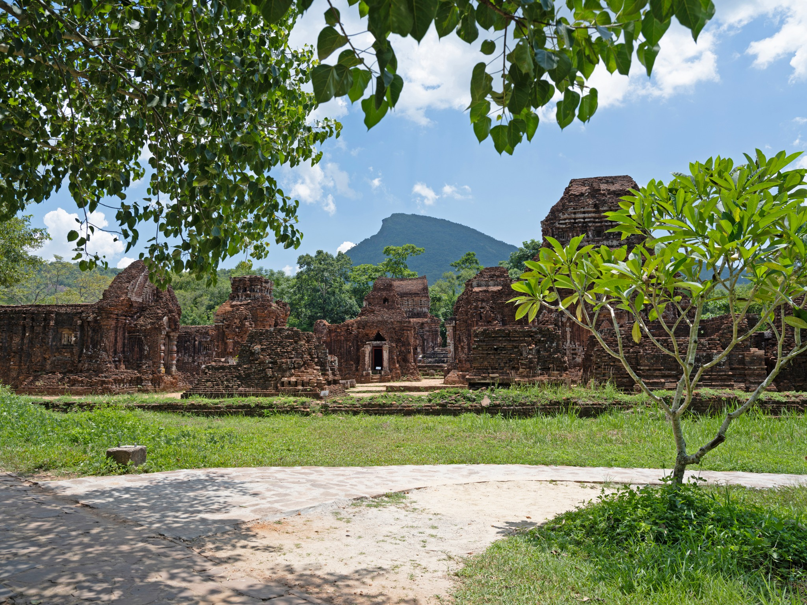

Tổng quan học thuật · 09.11.2026
Champa, từ núi ra biển
Cư trú, quyền lực, thánh địa và các mạng trao đổi ở miền Trung Việt Nam
Từ thung lũng Mỹ Sơn xuống Trà Kiệu rồi ra cửa Thu Bồn, mỗi địa điểm cho thấy một phần khác của Champa. Một văn bia ghi nguồn lực dành cho nơi thờ tự. Một lớp gốm cho biết người ta đã cư trú ở đâu. Một hiện vật trong bảo tàng lại đặt câu hỏi về nơi phát hiện, vị trí ban đầu và đường đi về bộ sưu tập. Bài này đọc các dấu vết ấy theo từng bối cảnh để thấy quyền lực, đời sống và việc thờ tự đã thay đổi như thế nào.
Tóm tắt. Champa được xem xét qua các chính thể và cộng đồng hiện diện ở những lưu vực và thời đoạn khác nhau. Khảo cổ làm rõ nhịp cư trú và xây dựng. Văn khắc cho biết ai tuyên bố quyền lực, hiến tài sản hoặc tái lập việc thờ. Tư liệu sau 1471 giúp theo dõi Paṇḍuraṅga và các cộng đồng Chăm qua những biến đổi thể chế. Phần cuối trình bày các phép kiểm của Đan–Mạng và giới hạn của bản đồ khi biểu diễn các quan hệ lịch sử.
Từ khóa Champa · Thu Bồn · văn khắc Campā · thánh địa · Paṇḍuraṅga · bảo tồn · Đan–Mạng
Mở bản đồ Champa ↗ · Tra hồ sơ theo chủ đề

1. Lưu vực, cửa biển và cao nguyên
Địa hình duyên hải miền Trung chia thành các đồng bằng, lưu vực và dải núi tiếp biển. Trà Kiệu và Mỹ Sơn nằm trong không gian Thu Bồn nhưng có chức năng và lịch sử sử dụng khác nhau. Ra phía cửa sông, Bãi Làng trên Hòn Lao có gốm ngoại nhập và thủy tinh. Hồ sơ khai quật cho biết nơi các vật được tìm thấy. Việc xác định nơi tàu cập và tuyến hàng đi sâu vào đất liền cần thêm bối cảnh đồng đại và dữ liệu cổ thủy hệ. Bản hiệu đính nghiên cứu Đại Chiêm trên Drive vì vậy được dùng để lập các câu hỏi theo từng đoạn bờ và từng thời kỳ. [2] [3] [5] [6]
Từ Huế và các địa điểm ở Quảng Trị đến Thu Bồn, Trà Khúc, sông Kôn, sông Cái Nha Trang và vùng Phan Rang, tư liệu có độ dày rất khác nhau. Các tên Amarāvatī, Vijaya, Kauṭhāra và Paṇḍuraṅga giúp đối chiếu nguồn theo vùng. Khi vẽ phạm vi chính trị, cần ghi nguồn dùng tên đó, thời đoạn và mức xác định. Trên cao nguyên, C.167 tại Kon Klor là chứng cứ về sự hiện diện của văn khắc và hoạt động thờ tự. Hai cách đọc năm trên bia và phạm vi quan hệ với các vùng ven biển là những vấn đề riêng. [1] [2] [8] [12]
Khu lò Gò Sành ở Bình Định cho một loại chứng cứ khác về trao đổi. Lò, phế phẩm và đồ gốm cùng bối cảnh giúp nhận diện nơi sản xuất. Gốm tương đồng ở nơi tiêu thụ cần được so lại bằng đặc điểm xương, men và kỹ thuật. Cách đọc từ nơi làm đến nơi sử dụng hữu ích hơn việc vẽ một tuyến nối giữa mọi điểm có đồ gốm giống nhau. [25]
2. Các mốc lịch sử và phạm vi của từng nguồn
Lâm Ấp và Campā. Mốc 192 thường xuất hiện trong cách kể về Lâm Ấp theo sử liệu Trung Hoa. Để nối một tên gọi trong sử liệu với một địa điểm khảo cổ cần đối chiếu địa danh, niên đại và đặc điểm lớp cư trú. Tư liệu Sa Huỳnh muộn và Champa sơ kỳ ở Gò Cấm – Trà Kiệu cho phép kiểm tiếp nối vật chất ở cấp lưu vực. Từ đó đến việc xác định một chính thể, dân cư hay tên gọi còn cần văn bản và chứng cứ độc lập. [1] [2] [3] Đối chiếu phần chuyển tiếp Sa Huỳnh.
Tóm tắt IPPA 2026 đặt lớp cư trú sớm ở Trà Kiệu vào thế kỷ II CN và đề xuất lũy bắt đầu vào cuối thế kỷ III hoặc thế kỷ IV. Thành Lồi (Huế) được khảo sát địa hình GNSS trong nghiên cứu cùng nhóm, với tình trạng khai quật và chất lượng định tuổi khác Trà Kiệu. Các đề xuất đối chiếu với địa danh Lâm Ấp cần kiểm bằng từng nguồn. Những điểm đo ở thành giúp đọc địa hình, vị trí lũy và câu hỏi về tổ chức không gian. [3] [4]
| Mốc | Sự kiện hoặc dữ liệu | Phạm vi diễn giải |
|---|---|---|
| Thế kỷ II–IV | Cư trú sớm và đề xuất niên đại dựng lũy tại Trà Kiệu. [4] | Tóm tắt hội nghị phân biệt hai mốc. Cần công bố hố, lớp và mẫu để kiểm chi tiết. |
| 658 CN | Mốc theo kiểm kê và ấn bản của bia Mỹ Sơn C.96 gắn với Prakāśadharman. [8] | Giữ theo nguồn kiểm kê và cách quy đổi, chờ đối chiếu trực tiếp mốc với dòng bia. |
| 797 Śaka · 875 CN | C.66 ghi việc lập cơ sở thờ Lakṣmīndra Lokeśvara và cấp nguồn lực ở Đồng Dương. [9] | Mốc hiến lập trong văn bản. Các công trình trên mặt bằng có thể có lịch sử riêng. |
| 1152 và 1156 Śaka | C.86 ghi những việc hiến cúng và tái lập thờ tự ở Mỹ Sơn thế kỷ XIII. [10] | Hai đơn vị văn bản trên vật mang chữ, cần tách khi dựng trình tự. |
| 1471 | Vijaya thất thủ trước cuộc tiến quân của Đại Việt. [1] [2] [15] | Bước ngoặt chính trị. Paṇḍuraṅga và các cộng đồng Chăm có lịch sử tiếp theo ở phía nam. |
| 1832–1835 | Triều Minh Mạng bãi bỏ thiết chế cai trị Chăm ở Paṇḍuraṅga năm 1832. Các nguồn Chăm ghi biến động tiếp theo. [13] [14] | Phân biệt quyết định hành chính, các xung đột sau đó và lịch sử cộng đồng. |
Biến động cuối thế kỷ X quanh Indrapura và sự nổi lên của Vijaya thường được dùng để định hướng câu chuyện vương quyền. Khi đọc theo địa điểm, nhịp ấy khác với nhịp hoạt động tại Mỹ Sơn hoặc Pô Nagar. Công trình về bia thế kỷ XV của Arlo Griffiths cho thấy có thể làm rõ thêm tên và quan hệ vương quyền từ những văn bản cụ thể. Tư liệu Paṇḍuraṅga về sau gồm văn bản hành chính và bản chép Chăm, với những góc nhìn khác nhau về các biến động cuối thế kỷ XVIII và đầu thế kỷ XIX. [1] [2] [10] [13] [14] [15]
3. Văn bia ghi việc gì, vào lúc nào?
Một mã C. định danh vật hoặc mục kiểm kê. Trên cùng bia có thể có nhiều mặt, nhiều lần ghi và nhiều niên đại. Các con số phải được gắn với sự kiện, dòng chữ và cách đọc. Kiểm kê EFEO–ISAW giúp nhận dạng văn bản. Các ấn bản và bản dịch DHARMA giúp kiểm nội dung, dị bản và mức chắc chắn. Corpus tiếng Việt trên Drive dùng làm chỉ mục đối chiếu. [8] [9] [10] [11]
Mỹ Sơn và Đông Yên Châu. C.72 là bia Sanskrit gắn với Bhadravarman và việc hiến nguồn lực cho Bhadreśvara. C.174 ở Đông Yên Châu là văn khắc Chăm cổ, được ước định niên đại theo cổ tự. Đặt hai văn bản cạnh nhau cho thấy ngôn ngữ và loại văn bản có thể khác nhau ngay trong một vùng. Niên đại ước định của một bản khắc cần ghi khác với niên số đọc được trên đá. [8]
Hóa Quê và Kon Klor. C.142 ghi bốn mốc hiến lập, 820, 829, 830 và 831 Śaka. Mốc 831 là mốc muộn nhất trong bốn sự kiện, cần tách khỏi năm thực sự khắc bia. Với C.167, một niên số viết bằng từ tượng trưng được đọc theo hai cách, 836 hoặc 876 Śaka. Đó là hai phương án đọc một mốc, trong khi C.142 là nhiều mốc sự kiện cùng xuất hiện trong một văn bản. [11] [12]
Tài sản thờ tự và người thực hiện. C.139 ở Phú Thuận ghi việc miễn thuế và điều chuyển nguồn thu để duy trì nước và thức ăn dâng thần. C.140 ở Hương Quê cho phép theo dõi việc phê chuẩn hiến ruộng và các chủ thể được ghi tên. C.66 ghi tài sản và quy định bảo vệ cơ sở thờ. Các bia cung cấp chứng cứ về việc quy định hoặc hiến lập. Muốn biết tài sản thực tế được sử dụng và duy trì bao lâu cần theo dõi hồ sơ về sau, nếu có. [9] [11]
4. Ngôn ngữ, chính thể và các cộng đồng Chăm
Tiếng Chăm thuộc nhóm Chamic trong ngữ hệ Nam Đảo. Văn khắc Sanskrit và Chăm cổ cho thấy nhiều cách dùng chữ và nhiều đối tượng mà văn bản hướng đến. Ngôn ngữ ghi trên bia thuộc về bối cảnh tạo văn bản, với thiên lệch về những người có quyền lập bia. Thành phần dân cư và tiếng nói hằng ngày cần thêm khảo cổ, ngôn ngữ học lịch sử và tư liệu khác. [2] [8] [23]
Lịch sử của các cộng đồng Chăm tiếp tục qua những thay đổi về địa bàn cư trú, tổ chức làng, bản chép tay và quan hệ với các chính thể xung quanh. Nghiên cứu về người Chăm Ahiér và Bàni cho thấy cần đọc cách tự gọi, cách gọi của người ngoài và thực hành nghi lễ tại địa phương. Những cách gọi Ahiér, Awal, Bàni hay Hồi giáo được dùng theo cộng đồng, thời đoạn và ngữ cảnh nghiên cứu. Tư liệu về Paṇḍuraṅga và nghiên cứu dân tộc học đương đại vì vậy giữ hai vai trò riêng. [13] [14] [23]
5. Kiến trúc qua mặt bằng, vật liệu và đường tiếp cận
Một cách đọc cụm tháp bắt đầu từ đường tiếp cận và những khoảng chuyển giữa cổng, sân và nơi thờ chính. Kalan thường chỉ tháp thờ chính. Sự có mặt và chức năng của nhà dài, tháp cổng hay kiến trúc phụ cần đọc theo từng mặt bằng. Khối gạch tạo thân và tầng tháp, còn đá thường có mặt ở khung cửa, bệ, mi cửa và cấu kiện điêu khắc. Bản vẽ và ảnh của Parmentier ghi được nhiều chi tiết nay đã mất. Khi ghép với khảo sát mới, cần ghi rõ thời điểm đo, phần còn thấy và phần được phục nguyên. [7] [16] [27]
Tại Mỹ Sơn, dấu đường và cấu trúc ở khu tháp K cung cấp chứng cứ cho một đoạn tiếp cận. Muốn nối đoạn ấy thành tuyến hành lễ qua các nhóm đền cần thêm dấu đường, cao độ, hướng đi, mốc niên đại và quan hệ với từng công trình. Ở Đồng Dương, mặt bằng và điêu khắc cho phép đọc cách tổ chức một cơ sở Phật giáo. Bia C.66 cung cấp một dòng chứng cứ khác về việc lập cơ sở thờ và nguồn lực cho cộng đồng tu sĩ. [7] [9] [16] [27] [28]
Đặt Mỹ Sơn cạnh Dương Long, Chiên Đàn và Pô Klong Garai, có thể so hướng cửa, hình dáng mặt bằng, cách tổ chức nhóm và vị trí cấu kiện đá. Niên đại kiến trúc cần phân biệt tuổi xây, sửa và tái dùng. Với gạch, mạch xây và dấu gia công, cách giải thích kỹ thuật cần mẫu phân tích, vị trí mẫu và đối chiếu thực nghiệm. Kiểu dáng tương tự là một đầu mối để chọn đối tượng so sánh. [7] [16]
6. Từ cấu kiện kiến trúc đến hiện vật bảo tàng
Đài thờ Mỹ Sơn E1, đài thờ Trà Kiệu và nhóm tượng Đồng Dương cho phép so ba loại bối cảnh. E1 có các dải phù điêu gắn với bệ thờ và sinh hoạt tu sĩ. Trà Kiệu có những cảnh kể chuyện trên đài thờ, với cách định danh đề tài cần nêu theo tác giả. Tượng đồng Đồng Dương thường gọi là Tārā cần đọc qua nơi phát hiện, thuộc tính tạo hình, hồ sơ bảo vật và lịch sử nghiên cứu. Danh xưng Lakṣmīndra Lokeśvara trên C.66 thuộc văn bản hiến lập. Việc gắn một pho tượng cụ thể với danh xưng ấy cần căn cứ riêng. [9] [17] [18] [19] [20]
Với mỗi hiện vật, nên lưu riêng vị trí trong kiến trúc nếu biết, nơi phát hiện, nơi lưu giữ theo thời điểm và số kiểm kê. Hai bảo tàng có thể dùng ký hiệu khác nhau cho một hiện vật qua các lần chuyển giao, hoặc dùng tên tương tự cho hai tiêu bản khác nhau. Đối chiếu ảnh nhiều mặt, kích thước, nhãn và hồ sơ nhập giúp phân biệt. Bản đồ nối nơi phát hiện với nơi lưu giữ khi có nguồn và giữ mốc thời gian của nguồn. Một đường nối trên bản đồ biểu thị quan hệ hồ sơ, còn lộ trình vận chuyển cần tài liệu khác. [7] [17] [18] [19] [26]
7. Thờ tự và di sản sống
Mỹ Sơn, Đồng Dương và Pô Nagar có các tổ hợp văn khắc, kiến trúc và tượng thờ khác nhau. Đọc theo từng thời kỳ cho thấy cách thiết lập và duy trì nơi thờ có thể thay đổi. Các lễ hội hiện nay cho biết cách cộng đồng sử dụng và chăm sóc di sản hôm nay. Muốn theo dõi một thực hành qua nhiều thế kỷ cần tư liệu trung gian về người tham gia, thời gian, ngôn ngữ và các thao tác nghi lễ. [8] [9] [22] [23] [28]
Katê ở các cộng đồng Chăm Ahiér và lễ hội Tháp Bà Pô Nagar có những bối cảnh cộng đồng và tổ chức riêng. Ramưwan cũng cần đọc theo truyền thống thực hành địa phương. Với nghề gốm Chăm, hồ sơ UNESCO năm 2022 ghi nhận kỹ năng tạo dáng thủ công, nung ngoài trời và vai trò truyền nghề của phụ nữ. Đây là tư liệu về một thực hành sống và điều kiện duy trì nghề. Muốn nối nó với một tập hợp gốm khảo cổ cần so riêng nguyên liệu, thao tác, sản phẩm và bối cảnh truyền nghề. [21] [22] [23]
8. Khai quật, bảo tồn và giới hạn của điểm bản đồ
Mỹ Sơn được ghi danh Di sản thế giới năm 1999. Hồ sơ UNESCO đặt giá trị của quần thể trong cả kiến trúc còn thấy và tư liệu nằm dưới đất. Ảnh, bản vẽ đầu thế kỷ XX, hiện trạng sau chiến tranh và hồ sơ tu bổ ghi các thời điểm khác nhau. Khi so hình khối hoặc kỹ thuật gạch, cần phân biệt cấu kiện nguyên vị, phần tái lắp, phần sửa mới và giả định phục nguyên. [7] [16]
Châu Sa và tư liệu khảo cổ năm 2026
Báo cáo sơ bộ của Sở Văn hóa, Thể thao và Du lịch Quảng Ngãi tháng 9/2026 ghi nhận ba lò nung ngói và bãi thải phế phẩm trong 100 m² khai quật tại nội thành Châu Sa. Tổ hợp cung cấp chứng cứ sản xuất tại chỗ, với các mẫu cần tiếp tục giám định và định tuổi. Bản đồ giữ khu lò nung và thành Châu Sa thành hai hồ sơ. Muốn gắn tuổi khu lò với tuổi dựng một đoạn lũy cần biết quan hệ địa tầng giữa hai cấu trúc. Cách phân biệt này cũng áp dụng khi đọc cư trú sớm và lũy ở Trà Kiệu. [4] [24]
Điểm bản đồ có thể đại diện cho một di tích, một cửa tiếp cận hoặc nơi phát hiện theo nguồn. Phạm vi di tích, ranh bảo vệ và vị trí từng hố cần tài liệu thích hợp. Hồ sơ chờ xác minh tọa độ vẫn có thể dùng để tra nguồn. Hình dạng và nét viền của ký hiệu giúp người đọc nhận biết loại hồ sơ và mức kiểm vị trí.
9. Đan–Mạng như một khung nghiên cứu có thể kiểm
Khung Đan–Mạng của Lê Trí Công đề nghị đọc nhiều lớp quan hệ theo thời gian, gồm quyền lực, thờ tự, trao đổi và lưu thông hiện vật. Đơn vị kiểm là một quan hệ có chủ thể, đối tượng, hành động, thời điểm và nguồn. Cùng xuất hiện trong một lưu vực mới là đầu mối so sánh. Văn khắc ghi việc cấp ruộng, miễn thuế hoặc tái lập thờ tự cho phép dựng những quan hệ cụ thể hơn. [9] [10] [11] [26]
- Dữ liệu. Ghi rõ ai hiến hoặc phê chuẩn, tài sản nào được nói tới, và văn bản ghi việc đó vào mốc nào.
- Phân tích. So những quan hệ cùng loại trong một khoảng thời gian đủ hẹp. Tính đến chênh lệch giữa vùng có nhiều bia còn lại và vùng chủ yếu có dữ liệu khảo cổ.
- Suy luận cần kiểm. Muốn nói một địa điểm thay vai trò sau biến động, cần chỉ báo trước và sau, chứng cứ về một điểm thay thế và cách loại trừ khả năng hồ sơ thiếu. Bản rà trên Drive ghi nhận những trường hợp tái lập và chuyển nguồn lực. Cơ chế tạo ra thay đổi và ưu thế giải thích của mô hình còn cần kiểm độc lập.
10. Hồ sơ liên kết trong Bách khoa và Bản đồ
Các liên kết mở hồ sơ nơi phát hiện, nơi lưu giữ và địa điểm đối chiếu. Mỗi điểm giữ mức xác minh theo nguồn trong hồ sơ.
- Cổ Lũy (Quảng Trị) · Địa danh, dấu tích và mức kiểm vị trí
Bách khoa · Bản đồ - Thành Lồi (Huế) · Khảo sát lũy, địa hình và niên đại
Bách khoa · Bản đồ - Trà Kiệu · Cư trú, lũy và hiện vật theo từng pha
Bách khoa · Bản đồ - Gò Cấm – Duy Trung · Đối chiếu cư trú sớm ở Thu Bồn
Bách khoa · Bản đồ - Thành Châu Sa · Thành và các lớp sử dụng
Bách khoa · Bản đồ - Khu lò nung Châu Sa · Bối cảnh sản xuất và công bố sơ bộ 2026
Bách khoa · Bản đồ - Thành Đồ Bàn · Đối chiếu các pha ở vùng Vijaya
Bách khoa · Bản đồ - Mỹ Sơn · Mặt bằng, tuyến tiếp cận và các nhóm tháp
Bách khoa · Bản đồ - Đồng Dương · Mặt bằng Phật viện và bia C.66
Bách khoa · Bản đồ - Chiên Đàn · Kiến trúc, phù điêu và văn khắc
Bách khoa · Bản đồ - Dương Long · Cấu kiện đá trong kiến trúc gạch
Bách khoa · Bản đồ - Tháp Bà Pô Nagar · Kiến trúc và lễ hội
Bách khoa · Bản đồ - Pô Klong Garai · Nhóm tháp và thực hành lễ Katê
Bách khoa · Bản đồ - Pô Rômê · Hồ sơ Paṇḍuraṅga và thực hành tưởng niệm
Bách khoa · Bản đồ - Bảo tàng Điêu khắc Chăm Đà Nẵng · Bộ sưu tập và hồ sơ xuất xứ
Bách khoa · Bản đồ - Bảo tàng Hải ngoại · Đối chiếu nơi lưu giữ theo từng hiện vật
Bách khoa · Bản đồ - Bảo tàng Mỹ Sơn · Hiện vật và trưng bày tại quần thể
Bách khoa · Bản đồ
Văn khắc để đọc cùng bài. Đồng Dương C.66 · Mỹ Sơn C.86 · Hóa Quê C.142 · Tra corpus văn khắc.
11. Tài liệu và phạm vi đối chiếu
- Michael Vickery (2005), Champa Revised, ARI Working Paper 37. Đối chiếu các cách đọc sử liệu về Lâm Ấp và những trung tâm Champa. NUS.
- Arlo Griffiths, Andrew Hardy và Geoff Wade (chủ biên, 2019), Champa: Territories and Networks of a Southeast Asian Kingdom. Các chương về không gian chính trị, văn khắc và lưu thông có phạm vi nguồn khác nhau. EFEO · Toàn tập.
- Lâm Thị Mỹ Dung (2019), Champa Settlements of the First Millennium: New Archaeological Research. Các mục về Trà Kiệu, Gò Cấm và địa điểm hạ lưu Thu Bồn. Toàn văn.
- Mariko Yamagata, Nguyễn Văn Quảng, Miyahara Kengo và Kubo Sumiko (2026), Tra Kieu and Thanh Loi: Early Champa Citadels and the Transition from the Sa Huynh Culture to State Formation. Tóm tắt hội nghị IPPA, S53-6. IPPA.
- Kỷ yếu Khảo cổ học thành phố Đà Nẵng (2026), bản trên Drive. Đối chiếu Lâm Thị Mỹ Dung về không gian cư trú Tiền – Sơ sử (tr. 24–42), Đỗ Trường Giang về phân bố di tích Champa (tr. 64–83) và bảng kiểm kê của Bảo tàng Đà Nẵng.
- Trung tâm Quản lý Bảo tồn Di sản Văn hóa Hội An, lý lịch và hồ sơ di chỉ Bãi Làng, Cù Lao Chàm. Dùng để đối chiếu địa điểm, khai quật và nhóm hiện vật. Hồ sơ di chỉ · Lý lịch.
- Henri Parmentier (1901), Caractères généraux de l’architecture chame, và tập bản vẽ Inventaire descriptif des monuments čams de l’Annam (1909). Đối chiếu bản vẽ lịch sử, tên công trình và mức còn thấy. BEFEO · Tập bản vẽ.
- Corpus of the Inscriptions of Campā, kiểm kê EFEO–ISAW, các mục C.72, C.96, C.174. Đọc cùng bản corpus tiếng Việt v3.4.7 trên Drive và các nguồn gốc mà corpus dẫn. Mốc C.96 theo kiểm kê và đối chiếu Golzio 2004, tr. 13. Kiểm kê.
- Arlo Griffiths, ấn bản số bia Đồng Dương C.66. Đọc mốc 797 Śaka, đoạn hiến lập và quy định bảo vệ. DHARMA C.66.
- Arlo Griffiths và Salomé Pichon, ấn bản số khung cửa Mỹ Sơn C.86.1 và C.86.2. DHARMA C.86.
- Các ấn bản số bia Phú Thuận, Hương Quê và Hóa Quê. Dùng để so quy định nguồn thu, phê chuẩn hiến ruộng và các mốc hiến lập. C.139 · C.140 · C.142.
- Ấn bản số C.167, bồn tắm tượng Kon Klor. Dùng hai phương án đọc niên số 836 hoặc 876 Śaka. DHARMA C.167.
- Po Dharma (1987), Le Pāṇḍuraṅga (Campā), 1802–1835. Đối chiếu với nhóm bản chép Chăm trong lưu trữ EFEO. Chuyên khảo EFEO · Bản chép Chăm.
- Nicholas Weber, The destruction and assimilation of Campā (1832–35) as seen from Cam sources. Dùng cho cách đọc giai đoạn 1832–1835 từ nguồn Chăm. Journal of Southeast Asian Studies.
- Arlo Griffiths (2019), Études du corpus des inscriptions du Campā, VI: Epigraphical Texts and Sculptural Steles Produced under the Vīrabhadravarmadevas of 15th-Century Campā. Đọc bản trên Drive và đối chiếu thông tin xuất bản. HAL.
- UNESCO World Heritage Centre, My Son Sanctuary, hồ sơ 949. Dùng cho niên đại ghi danh, phạm vi và giá trị bảo tồn của quần thể. Hồ sơ Di sản thế giới.
- Cục Di sản văn hóa, hồ sơ bảo vật Đài thờ Mỹ Sơn E1. Hồ sơ hiện vật.
- Cục Di sản văn hóa, hồ sơ bảo vật Đài thờ Trà Kiệu. Hồ sơ hiện vật.
- Cục Di sản văn hóa, hồ sơ tượng đồng thường gọi là Tārā, phát hiện tại Đồng Dương. Hồ sơ hiện vật.
- Un bronze de Tārā du Musée de Ðà-Nẵng et son importance pour l’histoire de l’art du Champa (1984). Đối chiếu đề xuất định danh và lịch sử nghiên cứu. BEFEO.
- UNESCO, Art of pottery-making of Chăm people, hồ sơ 01574. Dùng cho thực hành được ghi danh năm 2022 và truyền nghề. Hồ sơ di sản phi vật thể.
- Tư liệu cơ quan văn hóa về các thực hành đương đại, gồm Katê, Ramưwan và lễ hội Tháp Bà Pô Nagar. Katê và Ramưwan · Lễ hội Tháp Bà 2025.
- Mai Bùi Diệu Linh, nghiên cứu thực hành và căn tính Chăm Ahiér đương đại. Đọc cùng nghiên cứu về cách gọi và căn tính Chăm Bàni. Luận án tại Concordia · Nghiên cứu về Chăm Bàni.
- Sở Văn hóa, Thể thao và Du lịch Quảng Ngãi (17/09/2026), thông tin về báo cáo sơ bộ khai quật khẩn cấp tại Thành Châu Sa. Cổng thông tin Sở.
- Yoji Aoyagi và Gakuji Hasebe (chủ biên, 2002), Champa Ceramics: Production and Trade. Excavation Report of the Go Sanh Kiln Sites in Central Vietnam. Báo cáo khai quật.
- Lê Trí Công, Đan–Mạng. Đối chiếu báo cáo kiểm chứng corpus v1.1 và bản phản biện trên Drive. Khung và kết quả rà soát có phạm vi phương pháp riêng. Mục từ công khai.
- Lê Trí Công và Khánh Chi, Từ tháp K đọc lại đường vào Mỹ Sơn. Phân biệt dấu đường được ghi nhận với đề xuất đọc tuyến tiếp cận. Bài nghiên cứu · Bản vẽ Mỹ Sơn.
- Autour de Dong Duong, un grand monastère bouddhique cham de la fin du 9e siècle (2006). Đối chiếu mặt bằng, bản vẽ, ảnh và nghiên cứu quần thể. Persée.
Tài liệu làm việc trên Drive. Bản hiệu đính nghiên cứu cảng Đại Chiêm, hồ sơ Bắc Champa, corpus tiếng Việt và các bản kiểm chứng Đan–Mạng giúp định tuyến đọc. Bài dẫn về nguồn công bố cho các mệnh đề thực chứng. Mốc hoặc chức năng mới chỉ có trong tóm tắt hội nghị được ghi theo phạm vi của tóm tắt.